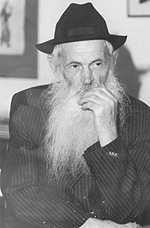

The Chassid Who Corresponded with the Premier of the Soviet Union
Beis Moshiach spoke with R’ Dovid Leib Chein’s wife Rivka and his son Meir Simcha, who told about his remarkable life. * A Chassid who lived among us, whose life was one of outstanding mesirus nefesh. * Presented for his yahrtzait, 10 Cheshvan.

R’ Dovid Leib came up with a daring idea. He wrote a letter to Nikita Khrushchev, the premier of the Soviet Union and said, “I am a religious, believing Jew, and therefore it is forbidden for me to work on Saturday. I request of you to allow me to work six days aside from Saturday. I will note that Soviet law permits a believer to keep the rules of his faith.” Under the circumstances of those times, this was a crazy thing to do!
Three weeks went by until he received a reply. It was an official letter, dry and to the point. “According to the law of the land, all citizens must work six days a week, from Monday until Saturday, including Saturday. Only Sunday is a day off.” It was signed: Premier of the Soviet Union, Nikita Khrushchev.
Two days later, R’ Dovid received a summons to appear immediately at the offices of the communist party. He knew they would be taking revenge for his letter writing. After ten years of hard labor, he knew very well what they were capable of meting out. He fearfully made his appearance with a prayer on his lips that all would work out for the best.
R’ Dovid was surprised when one of the senior officials offered him a job that did not entail working on Shabbos! Apparently, the order had come from above, from the premier, who, despite not wanting to officially allow him to not work on Shabbos, admired his courage and took this action on his behalf. R’ Dovid took a menial job doing renovations for the municipal government and did not have to desecrate Shabbos.
This episode gives us an idea of what this Chassid, R’ Dovid Leib Chein, was all about. He feared no one!
***
R’ Dovid Leib was born on 8 Shevat 5674/1914, in the Chassidic town of Nevel. His father was R’ Peretz Chein. He grew up absorbing the fiery spirit of Chassidus, which he preserved until his final day. As a child, he learned with his father and with his grandfather, R’ Meir Simcha Chein.
The authorities did not like the idea that the Chein family continued to cling to the ways of Torah and Chassidus. When persecution did not avail, the family (which was well-to-do) was sent away from Nevel after all their wealth was confiscated.
The family moved to Kremenchug, where R’ Dovid Leib learned in Yeshivas Tomchei T’mimim. At that time, the yeshiva there was one of the main branches of the yeshiva in the Soviet Union. The yeshiva was divided into two, with an older division made up of three classes, where R’ Dovid learned, and a younger division with over 100 talmidim. The mashgiach was R’ Meir Avtzon, and R’ Dovid Leib’s maggid shiur was R’ Menachem Mendel Gribov. The latter circulated among the three shuls in Kremenchug throughout the day and gave shiurim to the various classes.
In Iyar 1930, R’ Gribov was arrested and was accused of teaching Torah to children. He was sentenced to clean the streets, a humiliating and difficult job. As a result, the yeshiva was closed and the talmidim, including R’ Dovid Leib, went to learn in Vitebsk. He lodged with good Jews who endangered themselves in order to host the students. Since religious harassment was intensified in those days, R’ Dovid Leib had to move from city to city, including Rostov and Yekaterinoslav and finally ended up in the yeshiva in Kutais, Georgia. There, he met his uncle, R’ Yehuda (Kulasher) Butrashvili, who helped his young nephew.
As much as possible under the circumstances, R’ Dovid Leib learned Nigleh and Chassidus. He davened with avoda and attended many farbrengens, despite the unbearable life of wandering, persecution and surveillance, and lack of food and clothing.
His family moved to Moscow where his father supported himself by baking in his house, the goal being not to work on Shabbos. He managed to eke out a living to support his seven children.
In 1939, R’ Dovid Leib went to visit his family in Moscow. During this visit he became engaged to Rivka, the oldest daughter of R’ Nachman and Miriam Stroks. R’ Nachman was a Breslover Chassid, who had returned that year from a labor camp where he had been sent for being religious.
During those harsh years, when dozens of Chassidim were sent to Siberia or killed, it wasn’t easy to find a religious girl from a good home. A girl like that was a precious find. R’ Dovid Leib merited marrying a fine, modest, frum Chassidishe girl from a Chassidishe family.
The young couple lived in Moscow briefly until the outbreak of World War II. Then they joined the tens of thousands of civilians who fled to the interior of the country. Together with his father and brother, R’ Dovid and his wife arrived in the city of Karaganda in Kazakhstan, where there were already a few Lubavitchers, including R’ Moshe Vishedsky, R’ Yehuda Kulasher, and the Raskin family.
R’ Dovid and his father started a Chabad shul. They bought a tiny house and renovated it themselves, and this served as the shul for refugees. R’ Dovid Leib’s oldest son, Yosef, was born in Karaganda.
At the end of the war, the Chein family wanted to move back to Moscow, but on the way there, they heard that many Lubavitchers were heading for the border city of Lvov to try escaping across the border into Poland. Thus, they changed their destination for Lvov. After much wandering and hardship they arrived there.
R’ Dovid Leib was one of the first to arrive in Lvov. As soon as he arrived, he rented a small, two-room house where he lived. Afterward, when a stream of Lubavitchers arrived in Lvov and many of them had no place to live, they stayed with him. In those days, any outsider who came to the city had to register at the local police station and receive permission to remain in the city. Obviously, the Lubavitchers in town were there illegally, and they were terrified to walk in the street. R’ Dovid Leib, who was considered a relative old timer by that point, hosted many Lubavitchers who had no other place to stay. Among his guests were some of the great Chassidim such as the mashpia, R’ Mendel Futerfas, R’ Moshe Katzenelenbogen, and his two brothers, R’ Berke and R’ Avrohom Aharon.
The forging of documents, which enabled Anash to leave the Soviet Union, was also done in the cellar of his house despite the enormous danger. R’ Mendel Garelik sat for many hours in the cellar and forged documents and passports. Many of the secret meetings among the Chassidim took place in R’ Dovid Leib’s house. Dangerous activities took place at all hours of the day. Mrs. Chein stood outside in order to warn them of any approaching danger.
R’ Dovid Leib’s nephew, R’ Benzion Chein, describes life in the house:
“We also lived with my uncle, R’ Dovid Leib, as did many other Lubavitchers. His house was narrow and small with only two rooms and I don’t know how we all found a place there. It was like Avrohom’s tent, open to all. Since the house was constantly full of Chassidim, we often held farbrengens during which the mashke and tears poured like water. All wished one another that we would leave soon and in peace. I remember that one night there were so many guests that my father and I had no place to put our heads. I found a sack that I filled with straw and that is what we slept on.”
Mrs. Rivka Chein relates:
“Our house was always open; the door was never closed. Everyone was in our house. We held many farbrengens and every Motzaei Shabbos there was a Melaveh Malka.
“I had the strength for this as a yerusha from my father, who did so much for others and was full of energy when it came to matters of k’dusha.”
In the winter of 5707, the KGB laid hands on dozens of Chassidim who were involved with the escape through Lvov. It was a miracle that they did not get the Chein brothers, R’ Berke, R’ Avrohom Aharon and R’ Dovid Leib. They continued living in Lvov and worked to support their families.
Although the smuggling out of Russia had stopped, the authorities did not give up. They made every effort to find the Chassidim who had been involved. They conducted searches all over the country for the people they wanted.
A visitor of R’ Dovid Leib was arrested and after an interrogation and sentencing he was sent to a labor camp. At some point, the KGB suspected that he had information about the organizers of the smuggling operation out of Lvov, and he was brought back to the KGB headquarters in Leningrad. They told him that they knew he had a lot of information about what went on in Lvov. He was interrogated for days and underwent much suffering until he finally broke and said that R’ Dovid Leib’s house was their headquarters and that is where they forged documents. He also revealed the names of Chassidim who lived there or had visited the house like R’ Berke, R’ Avrohom Aharon and R’ Mendel.
This information was a treasure for the KGB who immediately worked to trap the traitors. Mrs. Chein tells about the arrest:
“Four armed KGB agents broke into the house in the middle of the night and they conducted a thorough search, turning the house upside down. When they saw the s’farim on the bookshelves, they angrily threw them to the floor. When they had calmed down somewhat, they began putting the s’farim into a large sack that they had brought along with them. The sack was nearly full when my husband noticed one of the KGB agents holding a Torah Ohr siddur, which he davened from every day and was very beloved to him. He asked the agent not to confiscate this book. To spite him, they threw it on the floor and trampled it. I could not restrain myself and cried out, ‘If you want, kill us, shoot us, but why should you torture my husband and denigrate these holy books?’
“When they finished their search, they took the documents they found as well as the s’farim. They took my husband in their car.
“I was shaken by his arrest and yet, I thanked G-d that my brother-in-law, Berke had left the house earlier on. I suddenly realized that my other brother-in-law was also in danger of imminent arrest and without thinking about my two little children, Yosef and Meir Simcha, I immediately ran to R’ Avrohom Aharon’s house to tell him they were looking for him.
“When I arrived there, I found my sister-in-law Mina sobbing. She said her husband was in a health spa in Georgia and he had sent a telegram that said he would be arriving by train the next day. The KGB, who had come to her house in the middle of the night, had found the telegram.
“As she cried, Mina asked me, ‘How can you think about others when your husband was arrested?’ I did not have much time to talk to her since I knew that other people were in danger. I started walking to R’ Berke’s house. He lived far from our house, on the outskirts of the city. I had to cross a large wheat field in the middle of the night. I didn’t think of how frightening it was; I ran as fast as I could and thought about how I might enter his house when the entrance was locked from the inside during the night.
“When I got there, I was delighted to find some drunks who had lit a small fire and while putting it out, they had opened the entrance door and had not locked it again. I quickly ran up the stairs and informed Berke of the arrest. He took his tallis and t’fillin and some food and said he would run away; he did not yet know where he was going. I gave him all the money I had on me and then I returned home, exhausted and broken.”
The interrogations of the Chein brothers were particularly harsh. They were accompanied by threats and torture as the interrogators did their utmost to break their spirits and extract information about the smuggling operation. R’ Avrohom Aharon (see full-length profile about him in issue #724) later related:
“They tortured us in jail. The interrogator was a cruel man and when I did not respond the way he wanted, he punched me in the head until I thought I would not get out of there alive. Then they put me in solitary for six days. They did not allow me to wear clothes on my upper body and it was bitter cold.”
R’ Dovid Leib related:
“After hours of interrogation, when I repeated ‘I don’t know’ to every question, the interrogator grew angry and said, ‘You are mocking me by answering that way to every question. You should know that my patience has come to an end and you will pay for this with ten, twenty, thirty years in jail! It is your choice to admit to the crimes and suffer a light sentence or to persist in your obstinacy and be sent to Siberia for twenty-five years!’
“I said: I am a Jew who knows and believes that there is a Creator and One who is charge of the world. My body and soul are in His hands and He is the one who will sentence me to life or death. I am not at all convinced that with your light sentence of five years that I am guaranteed life and I have no confidence at all that a sentence of twenty-five years means death.”
The interrogations did not provide the interrogators with the information that they wanted. R’ Dovid Leib refused to inform on his brethren. As a result, he suffered tremendously. He could have easily avoided the torture if he had revealed the names of just a few people, but he was willing to sacrifice his life rather than inform on others.
R’ Meir Simcha emotionally told us about what his father went through:
“I was a little boy when my father was arrested. I remember waking up in the middle of the night due to the noise the KGB made and I saw men with weapons turning the house over. Over the years, my father told me about the arrest and labor camps.
“From the KGB headquarters in Lvov, he was taken to jail in Kiev and from there to the KGB headquarters in Leningrad. He was interrogated endlessly for nine months! He was starved, put in solitary confinement, and was beaten mercilessly. One time, he lost himself during an interrogation and he lifted a chair and wanted to throw it at the interrogator. The interrogator yelled for help and some soldiers came immediately. They put my father on the floor, removed his clothing from his upper body, one sat on his shoulders and others held his arms and legs and they began beating him with an iron bar. He was left with scars from this beating. On another occasion, he was laid on the floor and beaten with electric cords until he begged them to shoot him and not torture him anymore.
“Nevertheless, he did not break and did not tell them about the other Chassidim. He denied any connection and knowledge of them. When they saw that he was not breaking, they decided to arrange a confrontation with the Jew who informed on him. This was a terrible psychological ordeal. My father was a baal chesed and hosted many Jews in his home, including this man. Now, he was suffering because of him. In my father’s presence, the man told about the entire smuggling operation from Lvov and he said, ‘Your house was the center for forging documents.’ My father denied this outright in order not to divulge the names of other Jews who were involved.
“Many years later, there was a family simcha and that man was in attendance. I was angry with him and wanted to send him away in shame, but first I asked my father what he thought. My father said, ‘How can you judge him negatively when he did not do this willingly. He broke under torture that a human being cannot bear. I forgive him with all my heart. Leave him alone.’
“I have no words for the shock I felt. I could not understand how my father, who suffered for ten years in labor camps because of this man’s informing, could forgive him. That was my father; he had a compassionate heart.
“My mother and Aunt Mina went to Leningrad for Pesach in order to find out where their husbands were being held. They brought packages of matza and kosher food for Pesach. They went to the various jails, but in each place they refused to tell my mother where my father was imprisoned. My mother was fortunate, since my aunt was arrested and she also underwent torture and interrogation.”
Kosher food was hard to obtain year round and R’ Dovid Leib sufficed with bread and water, but the problem was much greater on Pesach. A few days before Pesach, he ate less bread and exchanged the remains for sugar cubes. He hid the sugar and for the nine days of Pesach he had sugar and water. When they asked him how he was able to hide the sugar without it being stolen, he said, “I cannot explain this great miracle. Surely, if they had found the sugar before Pesach, I would not have had what to eat for nine days.”
In the book Yahadus Ha’adama it describes R’ Dovid Leib’s first Pesach:
“Fortunately, he had some sugar that he had gotten before Pesach and this sustained him throughout the holiday. His insides shrank due to the lack of minimal nourishment. However, since it was Pesach, he would not transgress a Torah prohibition at any cost. Starvation was not the only source of his suffering, as he had to maneuver as much as possible in order to hide this from the authorities, since if they discovered his actions they would force feed him.
“After Pesach, when he tried eating something, he suffered great pain. His shrunken organs could not digest anything. His suffering increased and he felt that these were his final hours on earth.
“Having no choice, he began knocking at the door of his cell so someone could come to help him. When the warden came, he told him he felt horrible and to call the doctor immediately. According to law, the warden had to call for a doctor if the prisoner requested this. The doctor came and examined him. He gave him no medicine, but allowed him to sleep in a bed.
“For those who did not undergo the Soviet hell, it pays to mention that permission to lie down during the daytime was unusual. This is because in Soviet prison, it was forbidden to lie down and rest for even a few minutes. It was permissible to sit on a chair or to walk around the cell. Only at ten at night was permission granted to lie down on a bed of boards and broken crates.
“When I recall those days,” said R’ Dovid Leib emotionally, “it is hard to understand how I could have gone through all that suffering; with hardly any food and drink, it was all measured out. There was no one to talk to, no one with whom to unburden your heart. Even if you wanted to say a few mizmorim, you did not have a T’hillim or siddur. The only thing I could do was to murmur some chapters of T’hillim by heart that I could remember, and the t’fillos of Shacharis, Mincha and Maariv which, amazingly, I had not forgotten in my great suffering. I would sing the verses of T’hillim to myself and place my trust in the Master of all who would eventually end my suffering and remove me from this quicksand.”
“After months of interrogation and torture,” continued his son, Meir Simcha, “the troika (three judges who passed judgment swiftly without listening to the accused who did not have a lawyer, of course) sentenced my father and his brother, Avrohom Aharon, and their sister-in-law Mina to ten years of exile and hard labor.
“The journey to their place of exile was very long; in crowded compartments with hardly any food and drink. They traveled for weeks until they arrived at labor camps at the North Pole. My father was sent to a camp called Vorkuta, and Avrohom Aharon was sent to a nearby camp called Milnak. Aunt Mina was exiled to a women’s labor camp in the same area.
“The prisoners were sent to do various jobs. At first, my father worked digging coal. This work was extremely difficult as they dug out rocks and coal from under the ground. My father worked the night shift for several weeks until his strength was depleted. Then he was transferred to clean roads of snow.
“During his exile, he found someone who had been able to keep his t’fillin and my father put on this man’s t’fillin every day. My father also kept Shabbos, and each Shabbos managed to avoid work with various excuses. Then, one Shabbos, his excuse did not help and he was punished in the tiny, filthy solitary cell for a week. You were not allowed to lie down or sit here, just stand.
“The Chassid, R’ Mule Mochkin was also in this camp and seeing my father’s suffering, he told the people in charge that my father’s health required them to give him easier work to do. R’ Mule was influential and my father was offered the job of watchman and that of directing the trains which arrived at the camp. My father agreed to work every night except Friday.
“During his time in the camp, my father wrote down the chapters of T’hillim as he remembered them. One day, a package arrived from my mother and along with food there was a T’hillim. Miraculously, the book was hidden from the eyes of the guards. Since it was large, he copied all the T’hillim onto papers from cigarette boxes. He collected every piece of paper that he found and made his own T’hillim. He hid all the papers between his belt and his pants and went to work like that. Since he was a guard who worked alone, he used the time to say T’hillim.
“Many years later, when my father went to the Rebbe, he wanted to give this handwritten T’hillim as a gift, but the Rebbe told him to keep it and to say T’hillim from it every Shabbos Mevarchim.
“For Chanuka, my father made prodigious efforts to obtain oil and something out of which to make wicks. After obtaining them, he began looking for something to serve as a menorah. In other camps, they lit candles in hollowed out potatoes, but in this camp which was in the North Pole, they did not even have potatoes. He ended up using an onion. After hollowing it out, he poured a few drops of oil into it.
“In the barracks my father lived in, there were some anti-Semitic political prisoners who tried to make his life miserable. However, the other prisoners loved and respected him, and when they saw that the political prisoners were bothering him, they threatened to harm them if they dared threaten my father again. ‘He prays for us,’ they said. ‘If you continue bothering him, we will kill you.’ Indeed, they stopped harassing him and my father could breathe with relief.”
Mrs. Chein relates:
“For many years, I was alone with my two sons as well as with R’ Avrohom Aharon and Mina’s two children. I had to support them and raise them to Torah and Chassidus. A few years later, one of the children was sent to his grandfather, R’ Peretz Chein, in Moscow, and my other son was sent to his uncle, R’ Yehuda Kulasher.
“I was allowed to send packages to my husband, brother-in-law and sister-in-law twice a year. I sent a little food and medicine. I made the effort to obtain the most up-to-date medicine available, i.e. antibiotics, because I knew that disease was widespread there and there were no medications or doctors. After my husband’s release, I heard that he needed the antibiotics because he had suffered from an infection that had already spread to his brain.”
***
From the moment R’ Dovid Leib was released, the family began thinking about how to leave the Soviet Union. With great effort, they received an invitation from residents of Eretz Yisroel so that they could receive an exit visa, but their request was rejected. They tried again a year later and once again their request was denied. This went on for ten years.
Then they learned that they could get an exit visa in exchange for a $1000 bribe per person, and on condition that the invitation they received was from any country but Israel. The Cheins received an invitation for family reunification from the brother Sholom who lived in England. Then they had to figure out how to get the enormous sum of $4000 for the entire family’s exit visas.
Mrs. Chein relates:
“The economic situation at the time made it impossible to raise such a sum, so I sent letters to relatives and acquaintances in the United States, England and Eretz Yisroel with a request for help. After a while, we began receiving parcels with various items that I could sell on the black market. When we earned the required amount, we paid OVIR and finally received our exit visas.
“Everything was arranged. We just had to pack our belongings, buy tickets and leave, but then we received a short letter from OVIR which said, ‘You must come to our offices immediately.’ We were very upset, since we realized that something was amiss and we were afraid that the visas we had obtained with so much effort would be canceled. There was also the fear lest we be arrested again. After a quick family consultation, we decided that some family members must leave that very day before they closed the borders to us. We bought tickets for my husband and oldest son in the hopes that when they arrived at the airport in Moscow, the officials over there would not know about the letter from OVIR.
“My husband and son arrived in Moscow and boarded a plane for Vienna. It was only after they were out of the country that I went to the OVIR office to find out what they wanted. I worriedly presented myself to them and one of the clerks informed me that we still owed them two rubles, a paltry sum. A heavy stone rolled off my heart.
“Soon, my son Meir Simcha and I left Russia and joined my husband and older son. We arrived in Eretz Yisroel a few days before Pesach 1969.”
***
The Cheins deliberated about where to live. Friends suggested Kfar Chabad, but Mrs. Chein wanted to live near her parents in Mea Sh’arim in Yerushalayim. They asked the Rebbe and he told them to live in Yerushalayim.
R’ Dovid Leib began working in Kiryat Noar (Boys Town) in Bayit V’Gan. His schedule included learning before davening and in the evening after work. His davening took a long time and was wondrously sweet. He recited the 12 Torah Passages every day after Shacharis and when asked why he did this, he said, “The Rebbe chose these p’sukim. Since I am his Chassid, these p’sukim are important to me and that is why I say them every day.”
R’ Dovid Leib was utterly devoted to the Rebbe and had yechidus several times. In 5743, instructions came from the Rebbe’s secretariat to appoint him as a member of Kollel Chabad in Yerushalayim.
Every Shabbos he walked a long distance to the Kosel, and from there he went to the Tzemach Tzedek shul in the Old City. He did this for years after his brother R’ Berke told the Rebbe that R’ Dovid Leib davened in the Tzemach Tzedek shul every Shabbos and the Rebbe smiled. R’ Dovid Leib considered this smile an instruction from the Rebbe to continue davening there. He did so even when walking became difficult for him in his old age.
***
R’ Dovid Leib passed away on 10 Cheshvan 5761/2000. His funeral was attended by hundreds of Anash and acquaintances in and out of Yerushalayim, mashpiim, rabbanim, roshei yeshiva and ordinary people. He is buried on Har HaMenuchos where he had bought a plot next to the grave of his father, R’ Peretz.
THE CHASSID AND THE MARGINS OF THE SIDDUR
R’ Yisachar Dov Vallis had this to say about R’ Dovid Leib:
R’ Dovid Leib was a dear fellow, modest and humble, a genuine Chassid. All his acquaintances loved hearing a vort from him. Erev Sukkos, when he was in the hospital, he asked that I come to him. When I arrived, he told me what he went through behind the Iron Curtain. He included the following Chassidic story and its lesson:
Chabad Chassidim went to the Rebbe (I think the Tzemach Tzedek) and on the way they stayed in a village. They were hosted by an old woman who had a Siddur of the Alter Rebbe in her possession. In the margins of the Siddur were Chassidic explanations. Such a Siddur was considered a rare find, and the Chassidim wanted to replace it with another Siddur that they would get for her, but she adamantly refused. After much pleading, she explained why she needed this particular Siddur.
“My father gave me this Siddur as a gift and told me that it would last many years, since if the pages got worn out only the Chassidic explanations would be lost, while the words of the Siddur themselves would remain.”
The Chassidim took this as a lesson about a Chassid who takes on extra Chassidic practices. Even if the practice wears away, at least his Judaism is left intact.
WHERE IS YOSSELE?
In the interview with Mrs. Chein, some interesting anecdotes about Yossele Schumacher came up. Mrs. Chein is his aunt, his mother’s sister. Her sister Ida and brother-in-law Alter made aliya much earlier than the rest of the family. Neither was religiously observant. At a certain point, due to financial difficulties, the couple decided to give their two children, ages 10 and five, to their grandfather, R’ Nachman Stroks, who lived in Yerushalayim for him to raise them.
A few years later, in the winter of 5709, the couple wanted their children back since they wanted to return to Russia. The grandfather gave them his granddaughter Tzina, but refused to give his grandson back. He even hid his grandson for a while and said he had suffered enough in Siberia, and he did not want his daughter and son-in-law to return to Russia because of financial reasons. The rav of Yerushalayim paskened that the grandfather was required to prevent his grandson from returning to Russia and it was everyone’s obligation to help him.
The Israeli police began searching for the boy but the child had been well hidden. At a certain point, it was said that the child had been smuggled out of the country. Prime Minister David ben Gurion got the Mosad involved in the matter. Extensive searches were conducted around the world in the attempt to find the six year old boy who had moved from place to place, from the yeshiva in Yerushalayim to Moshav Komemiyus, to Lucerne in Switzerland, and to Foubline, a town near Paris, until he finally joined the Gertner family in Brooklyn. Along the way, he was even disguised as a girl with braids.
The Shin-Bet turned the country upside-down in their search for Yossele. The country was in an uproar. How dare an old-fashioned religious man kidnap a child in order to brainwash him with religion? The cry of “Eifo Yossele” (Where is Yossele) resounded throughout the country.
Yossele was found on 28 Iyar 5722/1962 in Brooklyn and was returned to his parents.
Mrs. Chein:
“I was still in Lvov at the time. The KGB called me down and pressured me to write a letter to my sister, Yossele’s mother, in which I would ask her to return to Russia. I refused. Many years later, when my husband and I had my first yechidus with the Rebbe, the Rebbe spoke to us at length about Yossele and asked how he and his mother were. The yechidus took 45 minutes and most of the conversation was about Yossele.
“When we sat Shiva, Yossele came to be menachem avel. He wore a yarmulke and davened Maariv.”
Shneur Zalman Berger. "The Chassid Who Corresponded with the Premier of the Soviet Union." Beis Moshiach, no. 852 (October 19, 2012).